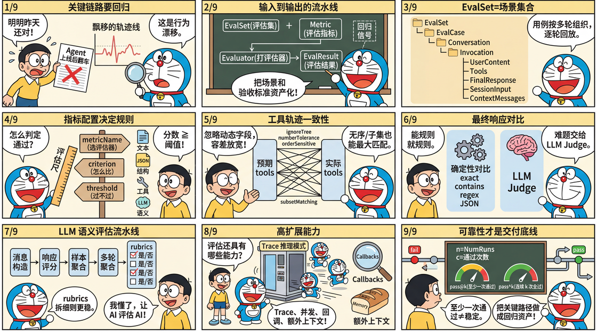

tRPC-Agent-Go：AI Agent 自动化评估范式与工程实践全解析
当 Agent 进入业务关键链路，最危险的往往不是显性的失败，而是难以察觉的行为漂移。一次正确输出无法证明下一版仍然可靠，模型与提示词的微调、工具与知识库的更新、编排逻辑的调整，都可能在不经意间改变关键决策与输出形态。评估需要把关键场景与验收标准固化为可复现的回归信号，使问题在上线之前被暴露并可被定位。本文聚焦 tRPC-Agent-Go 的评估能力，从最小可运行示例出发，介绍如何以评估集与评估指标组织评估资产并落盘结果，如何选择确定性评估与 LLM Judge 语义评估，并给出工程化接入要点，帮助将回归验证纳入本地调试与流水线回归。
tRPC-Agent-Go 是面向 Go 语言的自主式多 Agent 框架，具有工具调用、会话与记忆管理、制品管理、多 Agent 协同、图编排、知识库与可观测等能力。tRPC-Agent-Go 的成长离不开大家的支持，欢迎 Star 项目。
tRPC-Agent-Go 框架构建了一套完整的自动化评估体系，以评估集与评估指标为核心，将多轮对话、工具调用与最终输出统一为可重复执行的评估流程，并产出结构化的评估结果以支撑回归验证。框架集成了确定性的静态评估、LLM Judge 语义评估及 rubric 细则评估等多元化指标，配合并发推理、Trace 模式、回调与上下文注入等能力，旨在为开发者提供从 Agent 开发到回归测试的全链路支撑，确保在版本迭代中能够及时预判并捕获潜在的行为漂移。

背景
随着大模型能力与工具生态逐步成熟，Agent 系统从试验性场景走向业务关键链路，版本迭代频率不断提高，但是交付质量不再取决于一次演示的正确输出，而取决于在模型、提示词、工具、知识库与编排持续演进下的稳定性与可回归性。版本迭代过程中，关键行为可能发生隐蔽漂移，例如工具选择、参数结构或输出形态的变化，稳定回归问题亟待解决。
与确定性系统不同，Agent 系统问题通常表现为概率性偏离，复现与回放困难，定位需要跨越日志、轨迹与外部依赖，导致问题闭环成本显著上升。
评估的核心目的在于将关键场景与验收标准资产化，沉淀为可持续的回归信号，而 tRPC-Agent-Go 提供开箱即用的评估能力，支持基于评估集与评估指标的资产管理与结果落盘，内置静态评估器与 LLM Judge 评估器，并提供多轮会话评估、多次重复运行、Trace 评估模式、回调点、上下文注入与并发推理等能力，以支撑本地调试与流水线回归的工程化接入。
快速开始
本节给出一个最小使用示例，帮助读者快速感受 tRPC-Agent-Go 评估功能的使用方法。
本示例基于本地文件评估，完整代码见 examples/evaluation/local 。此外，框架还提供了基于内存的评估实现，完整示例参见 examples/evaluation/inmemory 。
环境准备
运行前配置模型服务的环境变量。
export OPENAI_API_KEY = "sk-xxx"
# 可选，不设置时默认使用 https://api.openai.com/v1
export OPENAI_BASE_URL = "https://api.deepseek.com/v1"
代码示例
下面给出两段核心代码片段，分别用于构建 Agent 与执行评估。
Agent 代码片段
这段代码构建了一个最小可评估的 Agent，使用 llmagent 挂载名为 calculator 的函数工具，并通过 instruction 约束数学问题都走工具调用，便于在评估中稳定对齐工具轨迹。
import (
"trpc.group/trpc-go/trpc-agent-go/agent"
"trpc.group/trpc-go/trpc-agent-go/agent/llmagent"
"trpc.group/trpc-go/trpc-agent-go/model"
"trpc.group/trpc-go/trpc-agent-go/model/openai"
"trpc.group/trpc-go/trpc-agent-go/tool"
"trpc.group/trpc-go/trpc-agent-go/tool/function"
)
func newCalculatorAgent ( modelName string , stream bool ) agent . Agent {
calculatorTool := function . NewFunctionTool (
calculate ,
function . WithName ( "calculator" ),
function . WithDescription ( "Perform arithmetic operations including add, subtract, multiply, and divide." ),
)
genCfg := model . GenerationConfig {
MaxTokens : intPtr ( 512 ),
Temperature : floatPtr ( 1.0 ),
Stream : stream ,
}
return llmagent . New (
"calculator-agent" ,
llmagent . WithModel ( openai . New ( modelName )),
llmagent . WithTools ([] tool . Tool { calculatorTool }),
llmagent . WithInstruction ( "Use the calculator function tool for every math problem." ),
llmagent . WithDescription ( "Calculator agent demonstrating function calling for evaluation workflow." ),
llmagent . WithGenerationConfig ( genCfg ),
)
}
type calculatorArgs struct {
Operation string `json:"operation"`
A float64 `json:"a"`
B float64 `json:"b"`
}
type calculatorResult struct {
Operation string `json:"operation"`
A float64 `json:"a"`
B float64 `json:"b"`
Result float64 `json:"result"`
}
func calculate ( _ context . Context , args calculatorArgs ) ( calculatorResult , error ) {
var result float64
switch strings . ToLower ( args . Operation ) {
case "add" , "+" :
result = args . A + args . B
case "subtract" , "-" :
result = args . A - args . B
case "multiply" , "*" :
result = args . A * args . B
case "divide" , "/" :
if args . B != 0 {
result = args . A / args . B
}
}
return calculatorResult {
Operation : args . Operation ,
A : args . A ,
B : args . B ,
Result : result ,
}, nil
}
评估代码片段
这段代码通过 Agent 创建可执行的 Runner，配置三个本地 Manager 读取评估集 EvalSet 与评估指标 Metric 并写入结果文件，再通过 evaluation.New 创建 AgentEvaluator 并调用 Evaluate 方法执行指定评估集。
import (
"trpc.group/trpc-go/trpc-agent-go/evaluation"
"trpc.group/trpc-go/trpc-agent-go/evaluation/evalresult"
evalresultlocal "trpc.group/trpc-go/trpc-agent-go/evaluation/evalresult/local"
"trpc.group/trpc-go/trpc-agent-go/evaluation/evalset"
evalsetlocal "trpc.group/trpc-go/trpc-agent-go/evaluation/evalset/local"
"trpc.group/trpc-go/trpc-agent-go/evaluation/evaluator/registry"
"trpc.group/trpc-go/trpc-agent-go/evaluation/metric"
metriclocal "trpc.group/trpc-go/trpc-agent-go/evaluation/metric/local"
"trpc.group/trpc-go/trpc-agent-go/runner"
)
const (
appName = "math-eval-app"
modelName = "deepseek-chat"
streaming = true
evalSetID = "math-basic"
dataDir = "./data"
outputDir = "./output"
)
// 通过 Agent 创建 Runner
runner := runner . NewRunner ( appName , newCalculatorAgent ( modelName , streaming ))
defer runner . Close ()
// 创建评估各 manager 与评估注册中心
evalSetManager := evalsetlocal . New ( evalset . WithBaseDir ( dataDir ))
metricManager := metriclocal . New ( metric . WithBaseDir ( dataDir ))
evalResultManager := evalresultlocal . New ( evalresult . WithBaseDir ( outputDir ))
registry := registry . New ()
// 创建 AgentEvaluator
agentEvaluator , err := evaluation . New (
appName ,
runner ,
evaluation . WithEvalSetManager ( evalSetManager ),
evaluation . WithMetricManager ( metricManager ),
evaluation . WithEvalResultManager ( evalResultManager ),
evaluation . WithRegistry ( registry ),
)
if err != nil {
log . Fatalf ( "create evaluator: %v" , err )
}
defer agentEvaluator . Close ()
// 执行评估
result , err := agentEvaluator . Evaluate ( ctx , evalSetID )
if err != nil {
log . Fatalf ( "evaluate: %v" , err )
}
// 解析评估结果
fmt . Println ( "✅ Evaluation completed with local storage" )
fmt . Printf ( "App: %s\n" , result . AppName )
fmt . Printf ( "Eval Set: %s\n" , result . EvalSetID )
fmt . Printf ( "Overall Status: %s\n" , result . OverallStatus )
评估文件
评估文件包含评估集文件与评估指标文件，组织结构如下所示。
math-eval-app/
math-basic.evalset.json # 评估集文件
math-basic.metrics.json # 评估指标文件
评估集文件
评估集文件路径为 data/math-eval-app/math-basic.evalset.json，用于承载评估用例。推理阶段会按 evalCases 遍历用例，再按每个用例的 conversation 逐轮取 userContent 作为输入。
以下评估集文件示例定义了一个名为 math-basic 的评估集。评估执行时会用 evalSetId 选择要运行的评估集，用 evalCases 承载用例列表，本例只有一个用例 calc_add。推理阶段会按 sessionInput 创建会话，再按 conversation 的顺序逐轮推理。本例只有一轮 calc_add-1，输入来自 userContent，也就是让 Agent 处理 calc add 2 3。这份用例选择工具轨迹评估器，因此在 tools 中写入预期的工具轨迹。它表达了一个具体要求，Agent 需要调用名为 calculator 的工具，入参是加法与两个操作数，工具结果也需要匹配。工具 id 通常由运行时生成，不作为匹配依据。
{
"evalSetId" : "math-basic" ,
"name" : "math-basic" ,
"evalCases" : [
{
"evalId" : "calc_add" ,
"conversation" : [
{
"invocationId" : "calc_add-1" ,
"userContent" : {
"role" : "user" ,
"content" : "calc add 2 3"
},
"tools" : [
{
"id" : "tool_use_1" ,
"name" : "calculator" ,
"arguments" : {
"operation" : "add" ,
"a" : 2 ,
"b" : 3
},
"result" : {
"a" : 2 ,
"b" : 3 ,
"operation" : "add" ,
"result" : 5
}
}
]
}
],
"sessionInput" : {
"appName" : "math-eval-app" ,
"userId" : "user"
}
}
],
"creationTimestamp" : 1761134484.9804401
}
评估指标文件
评估指标文件路径为 data/math-eval-app/math-basic.metrics.json，用于描述评估指标，按照 metricName 选择评估器，通过 criterion 描述评估准则，根据 threshold 定义阈值。一个文件可以配置多条指标，框架会依次执行。
本节只配置工具轨迹评估器 tool_trajectory_avg_score，对比每轮工具轨迹，工具 id 通常是运行时生成的，不作为匹配依据。
该指标逐轮对比工具调用，若工具名、参数、结果都匹配则记 1 分，不匹配记 0 分，总得分取各轮平均值，再与 threshold 比较得到通过与否。threshold 设为 1.0 时要求每一轮都匹配。
[
{
"metricName" : "tool_trajectory_avg_score" ,
"threshold" : 1.0
}
]
执行评估
# 设置环境变量
export OPENAI_API_KEY = "sk-xxx"
# 可选，不设置时默认使用 https://api.openai.com/v1
export OPENAI_BASE_URL = "https://api.deepseek.com/v1"
# 执行评估
run .
执行评估时，框架读取评估集文件与评估指标文件，调用 Runner 并捕获推理过程中的响应与工具调用，再根据评估指标完成评分并写入评估结果文件。
查看评估结果
结果写入 output/math-eval-app/，文件名形如 math-eval-app_math-basic_<uuid>.evalset_result.json。
结果文件会同时保留实际轨迹与预期轨迹，只要工具轨迹满足指标要求，评估结果即判定为通过。
{
"evalSetResultId" : "math-eval-app_math-basic_538cdf6e-925d-41cf-943b-2849982b195e" ,
"evalSetResultName" : "math-eval-app_math-basic_538cdf6e-925d-41cf-943b-2849982b195e" ,
"evalSetId" : "math-basic" ,
"evalCaseResults" : [
{
"evalSetId" : "math-basic" ,
"evalId" : "calc_add" ,
"finalEvalStatus" : "passed" ,
"overallEvalMetricResults" : [
{
"metricName" : "tool_trajectory_avg_score" ,
"score" : 1 ,
"evalStatus" : "passed" ,
"threshold" : 1
}
],
"evalMetricResultPerInvocation" : [
{
"actualInvocation" : {
"invocationId" : "5cc1f162-37e6-4d07-90e9-eb3ec5205b8d" ,
"userContent" : {
"role" : "user" ,
"content" : "calc add 2 3"
},
"tools" : [
{
"id" : "call_00_etTEEthmCocxvq7r3m2LJRXf" ,
"name" : "calculator" ,
"arguments" : {
"a" : 2 ,
"b" : 3 ,
"operation" : "add"
},
"result" : {
"a" : 2 ,
"b" : 3 ,
"operation" : "add" ,
"result" : 5
}
}
]
},
"expectedInvocation" : {
"invocationId" : "calc_add-1" ,
"userContent" : {
"role" : "user" ,
"content" : "calc add 2 3"
},
"tools" : [
{
"id" : "tool_use_1" ,
"name" : "calculator" ,
"arguments" : {
"a" : 2 ,
"b" : 3 ,
"operation" : "add"
},
"result" : {
"a" : 2 ,
"b" : 3 ,
"operation" : "add" ,
"result" : 5
}
}
]
},
"evalMetricResults" : [
{
"metricName" : "tool_trajectory_avg_score" ,
"score" : 1 ,
"evalStatus" : "passed" ,
"threshold" : 1 ,
"details" : {
"score" : 1
}
}
]
}
],
"sessionId" : "19877398-9586-4a97-b1d3-f8ce636ea54f" ,
"userId" : "user"
}
],
"creationTimestamp" : 1766455261.342534
}
核心概念
如下图所示，框架通过统一的评估流程将 Agent 运行过程规范化。评估输入由评估集 EvalSet 与评估指标 Metric 组成，评估输出为评估结果 EvalResult。
评估集 EvalSet 用于描述评估覆盖的场景，提供评估集输入，每个用例按轮组织 Invocation，包含用户输入，以及作为预期的 tools 轨迹或 finalResponse。评估指标 Metric 用于定义评估指标配置，包含 metricName、criterion、threshold。metricName 用来选择评估器实现，criterion 用来描述评估准则，threshold 用来定义阈值。评估器 Evaluator 读取实际轨迹与预期轨迹，按 criterion 计算 score，再与 threshold 对比得到通过或失败。评估器注册中心 Registry 维护 metricName 与 Evaluator 的映射关系，内置评估器和自定义评估器都通过它接入。评估服务 Service 负责执行用例、采集轨迹、调用评估器打分，返回评估结果。AgentEvaluator 通过 evaluation.New 创建并注入 Runner、Managers、Registry 等依赖，对用户接入层提供 Evaluate 方法。
一次评估运行通常包含以下步骤。
AgentEvaluator 根据 evalSetID 从 EvalSetManager 读取 EvalSet，从 MetricManager 读取 Metric 配置
Service 驱动 Runner 执行每个用例，采集实际 Invocation 列表
Service 逐条 Metric 从 Registry 获取 Evaluator 并计算分数
Service 汇总分数与状态，生成评估结果
AgentEvaluator 通过 EvalResultManager 保存结果，local 模式写入本地文件，inmemory 模式驻留内存
使用方法
评估集 EvalSet
EvalSet 用于描述评估覆盖的场景集合，提供评估集输入。每个场景对应一个评估用例 EvalCase，EvalCase 再按轮组织 Invocation。评估运行时，Service 会按 EvalCase 的 conversation 驱动 Runner 推理，并将推理得到的实际轨迹与 EvalSet 中的预期轨迹交给 Evaluator 对比打分。
结构定义
EvalSet 是评估用例的集合，每个用例用 EvalCase 表达，用例内部的 Conversation 按轮组织 Invocation，用于描述用户输入与可选的预期信息，结构定义如下。
import (
"trpc.group/trpc-go/trpc-agent-go/evaluation/epochtime"
"trpc.group/trpc-go/trpc-agent-go/model"
)
// EvalSet 表示评估集，用于组织一组评估用例
type EvalSet struct {
EvalSetID string // EvalSetID 是评估集标识
Name string // Name 是评估集名称
Description string // Description 是评估集说明，可选
EvalCases [] * EvalCase // EvalCases 是评估用例列表，必填
CreationTimestamp * epochtime . EpochTime // CreationTimestamp 是创建时间戳，可选
}
// EvalCase 表示单个评估用例
type EvalCase struct {
EvalID string // EvalID 是用例标识
EvalMode EvalMode // EvalMode 是用例模式，可选为空或 trace
ContextMessages [] * model . Message // ContextMessages 是上下文消息，可选
Conversation [] * Invocation // Conversation 是多轮交互序列，必填
SessionInput * SessionInput // SessionInput 是会话初始化信息，必填
CreationTimestamp * epochtime . EpochTime // CreationTimestamp 是创建时间戳，可选
}
// Invocation 表示对话中的一轮交互
type Invocation struct {
InvocationID string // InvocationID 是本轮标识，可选
UserContent * model . Message // UserContent 是本轮用户输入，必填
FinalResponse * model . Message // FinalResponse 是最终响应，可选
Tools [] * Tool // Tools 是工具轨迹，可选
IntermediateResponses [] * model . Message // IntermediateResponses 是中间响应，可选
CreationTimestamp * epochtime . EpochTime // CreationTimestamp 是创建时间戳，可选
}
// Tool 表示一次工具调用及其结果
type Tool struct {
ID string // ID 是工具调用标识，可选
Name string // Name 是工具名，必填
Arguments any // Arguments 是工具入参，可选
Result any // Result 是工具输出，可选
}
// SessionInput 表示会话初始化信息
type SessionInput struct {
AppName string // AppName 是应用名，可选
UserID string // UserID 是用户标识，必填
State map [ string ] any // State 是会话初始状态，可选
}
EvalSet 由 evalSetId 标识，包含多个 EvalCase，每个用例用 evalId 标识。
推理阶段按 conversation 的轮次读取 userContent 作为输入，sessionInput.userId 用于创建会话，必要时通过 sessionInput.state 注入初始状态，contextMessages 会在每次推理前注入额外上下文。
EvalSet 中的 tools 与 finalResponse 用于描述工具轨迹与最终响应，是否需要填写取决于所选评估指标。默认模式下它们通常作为预期信息，trace 模式下它们表示既有轨迹。
evalMode 为空表示默认模式，此时会实时推理并采集工具轨迹与最终响应。evalMode 为 trace 时跳过推理，直接使用 conversation 中的既有轨迹参与评估。
EvalSet Manager
EvalSetManager 是 EvalSet 的存储抽象，用于将评估用例资产从代码中分离。通过切换实现可以选择本地文件或内存存储，也可以自行实现接口接入数据库或配置平台。
接口定义
EvalSetManager 的接口定义如下。
type Manager interface {
// Get 获取评估集
Get ( ctx context . Context , appName , evalSetID string ) ( * EvalSet , error )
// Create 创建评估集
Create ( ctx context . Context , appName , evalSetID string ) ( * EvalSet , error )
// List 列出评估集列表
List ( ctx context . Context , appName string ) ([] string , error )
// Delete 删除评估集
Delete ( ctx context . Context , appName , evalSetID string ) error
// GetCase 获取评估用例
GetCase ( ctx context . Context , appName , evalSetID , evalCaseID string ) ( * EvalCase , error )
// AddCase 添加评估用例
AddCase ( ctx context . Context , appName , evalSetID string , evalCase * EvalCase ) error
// UpdateCase 更新评估用例
UpdateCase ( ctx context . Context , appName , evalSetID string , evalCase * EvalCase ) error
// DeleteCase 删除评估用例
DeleteCase ( ctx context . Context , appName , evalSetID , evalCaseID string ) error
}
如果希望从数据库、对象存储或配置平台读取 EvalSet，可以实现该接口并在创建 AgentEvaluator 时注入。
import (
"trpc.group/trpc-go/trpc-agent-go/evaluation"
)
evalSetManager := myevalset . New ()
agentEvaluator , err := evaluation . New (
appName ,
runner ,
evaluation . WithEvalSetManager ( evalSetManager ),
)
InMemory 实现
框架提供了 EvalSetManager 的内存实现，适合在代码中动态构建或临时维护评估集。该实现并发安全，读写通过锁保护。为避免调用方误修改内部数据，读接口会返回深拷贝副本。
Local 实现
框架提供了 EvalSetManager 的本地文件实现，适合将 EvalSet 作为评估资产纳入版本管理。
该实现并发安全，读写通过锁保护。写入时使用临时文件并在成功后重命名，降低异常导致的文件损坏风险。
Local 实现通过 BaseDir 指定根目录，通过 Locator 统一管理文件路径规则。Locator 负责将 evalSetId 映射为文件路径，并列出某个 appName 下已有的评估集列表。评估集文件的默认命名规则为 <BaseDir>/<AppName>/<EvalSetId>.evalset.json。
当希望复用既有目录结构时，可以自定义 Locator 并在创建 EvalSetManager 时注入。
import (
"trpc.group/trpc-go/trpc-agent-go/evaluation/evalset"
"trpc.group/trpc-go/trpc-agent-go/evaluation/evalset/local"
)
type customLocator struct {}
// Build 返回自定义文件路径格式 <BaseDir>/<AppName>/custom-<EvalSetId>.evalset.json
func ( l * customLocator ) Build ( baseDir , appName , evalSetID string ) string {
return filepath . Join ( baseDir , appName , "custom-" + evalSetID + ".evalset.json" )
}
// List 列出指定 appName 下的评估集 ID 列表
func ( l * customLocator ) List ( baseDir , appName string ) ([] string , error ) {
dir := filepath . Join ( baseDir , appName )
entries , err := os . ReadDir ( dir )
if err != nil {
if errors . Is ( err , os . ErrNotExist ) {
return [] string {}, nil
}
return nil , err
}
var results [] string
for _ , entry := range entries {
if entry . IsDir () {
continue
}
if strings . HasPrefix ( entry . Name (), "custom-" ) && strings . HasSuffix ( entry . Name (), ".evalset.json" ) {
name := strings . TrimPrefix ( entry . Name (), "custom-" )
name = strings . TrimSuffix ( name , ".evalset.json" )
results = append ( results , name )
}
}
return results , nil
}
evalSetManager := local . New (
evalset . WithBaseDir ( dataDir ),
evalset . WithLocator ( & customLocator {}),
)
评估指标 EvalMetric
EvalMetric 用于定义评估指标，它通过 metricName 选择评估器实现，通过 criterion 描述评估准则，通过 threshold 定义阈值。一次评估可以同时配置多条评估指标，评估执行会逐条应用这些指标，并分别产出分数与状态。
结构定义
EvalMetric 的结构定义如下。
import (
"trpc.group/trpc-go/trpc-agent-go/evaluation/metric/criterion"
"trpc.group/trpc-go/trpc-agent-go/evaluation/metric/criterion/finalresponse"
"trpc.group/trpc-go/trpc-agent-go/evaluation/metric/criterion/llm"
"trpc.group/trpc-go/trpc-agent-go/evaluation/metric/criterion/tooltrajectory"
)
// EvalMetric 表示单条评估指标
type EvalMetric struct {
MetricName string // MetricName 是评估指标名，与评估器名称保持一致
Threshold float64 // Threshold 是阈值
Criterion * criterion . Criterion // Criterion 是评估准则
}
// Criterion 表示评估准则集合
type Criterion struct {
ToolTrajectory * tooltrajectory . ToolTrajectoryCriterion // ToolTrajectory 是工具轨迹准则
FinalResponse * finalresponse . FinalResponseCriterion // FinalResponse 是最终响应准则
LLMJudge * llm . LLMCriterion // LLMJudge 是 LLM Judge 准则
}
metricName 用于从 Registry 选择评估器实现，默认内置以下评估器：
tool_trajectory_avg_score：工具轨迹一致性评估器，需要配置预期输出。final_response_avg_score：最终响应评估器，不需要 LLM，需要配置预期输出。llm_final_response：LLM 最终响应评估器，需要配置预期输出。llm_rubric_response：LLM 细则响应评估器，需要评估集提供会话输入并配置 LLMJudge 和评估细则 rubrics。llm_rubric_knowledge_recall：LLM rubric 知识召回评估器，需要评估集提供会话输入并配置 LLMJudge 和评估细则 rubrics。
threshold 用于定义阈值，评估器会输出 score 并据此判断通过或失败。不同评估器对 score 的定义略有差异，但常见做法是对每轮 Invocation 计算分数，再对多轮结果做聚合得到整体分数。同一评估集下 metricName 需要保持唯一，指标文件的数组顺序也会影响评估执行顺序与结果展示顺序。
下面给出一个工具轨迹指标文件示例。
[
{
"metricName" : "tool_trajectory_avg_score" ,
"threshold" : 1.0
}
]
评估准则 Criterion
Criterion 用于描述评估准则，不同评估器只会读取自己关心的子准则，可按需组合使用。
框架内置了以下评估准则类型：
准则类型
适用对象
TextCriterion
文本字符串
JSONCriterion
JSON 对象
ToolTrajectoryCriterion
工具调用轨迹
LLMCriterion
基于 LLM 评估模型的评估
Criterion
多种准则的聚合
TextCriterion
TextCriterion 用于比较两个字符串，常用于工具名对比与最终响应文本对比，结构定义如下。
// TextCriterion 表示文本匹配准则
type TextCriterion struct {
Ignore bool // Ignore 表示跳过对比
CaseInsensitive bool // CaseInsensitive 表示忽略大小写
MatchStrategy TextMatchStrategy // MatchStrategy 表示匹配策略
Compare func ( actual , expected string ) ( bool , error ) // Compare 自定义比较逻辑
}
// TextMatchStrategy 表示文本匹配策略
type TextMatchStrategy string
TextMatchStrategy 取值如下表所示，支持 exact、contains、regex 三种策略，默认值为 exact。对比时 source 是实际字符串，target 是预期字符串。exact 要求 source 与 target 完全一致，contains 要求 source 包含 target，regex 会将 target 视为正则表达式并匹配 source。
TextMatchStrategy 取值
说明
exact
实际字符串与预期字符串完全一致（默认）。
contains
实际字符串包含预期字符串。
regex
实际字符串满足预期字符串作为正则表达式。
配置示例片段如下，匹配策略为正则并启用忽略大小写。
{
"caseInsensitive" : true ,
"matchStrategy" : "regex"
}
TextCriterion 提供了 Compare 扩展点，用于在代码中覆盖默认对比逻辑。
以下代码示例片段，通过 Compare 自定义匹配逻辑，对比前先对字符串做 TrimSpace。
import (
ctext "trpc.group/trpc-go/trpc-agent-go/evaluation/metric/criterion/text"
)
textCriterion := ctext . New (
ctext . WithCompare ( func ( actual , expected string ) ( bool , error ) {
if strings . TrimSpace ( actual ) == strings . TrimSpace ( expected ) {
return true , nil
}
return false , fmt . Errorf ( "text mismatch after trim" )
}),
)
JSONCriterion
JSONCriterion 用于比较两个 JSON 值，常用于工具参数与工具结果对比，结构定义如下。
// JSONCriterion 表示 JSON 匹配准则
type JSONCriterion struct {
Ignore bool // Ignore 表示跳过对比
IgnoreTree map [ string ] any // IgnoreTree 表示需要忽略的字段树
MatchStrategy JSONMatchStrategy // MatchStrategy 表示匹配策略
NumberTolerance * float64 // NumberTolerance 表示数字容差
Compare func ( actual , expected any ) ( bool , error ) // Compare 自定义比较逻辑
}
// JSONMatchStrategy 表示 JSON 匹配策略
type JSONMatchStrategy string
当前 matchStrategy 仅支持 exact，默认值为 exact。
对比时 actual 是实际值，expected 是预期值。对象对比要求键集合一致，数组对比要求长度一致且顺序一致。数字对比支持数值容差，默认值为 1e-6。ignoreTree 用于忽略不稳定字段，叶子节点为 true 表示忽略该字段及其子树。
配置示例片段如下，忽略 id 和 metadata.timestamp 字段，并放宽数字容差。
{
"ignoreTree" : {
"id" : true ,
"metadata" : {
"timestamp" : true
}
},
"numberTolerance" : 1e-2
}
JSONCriterion 提供了 Compare 扩展点，用于在代码中覆盖默认对比逻辑。
以下代码示例片段，通过 Compare 自定义匹配逻辑，只要实际值与预期值都包含键 common 就视为匹配。
import (
cjson "trpc.group/trpc-go/trpc-agent-go/evaluation/metric/criterion/json"
)
jsonCriterion := cjson . New (
cjson . WithCompare ( func ( actual , expected any ) ( bool , error ) {
actualObj , ok := actual .( map [ string ] any )
if ! ok {
return false , fmt . Errorf ( "actual is not an object" )
}
expectedObj , ok := expected .( map [ string ] any )
if ! ok {
return false , fmt . Errorf ( "expected is not an object" )
}
if _ , ok := actualObj [ "common" ]; ! ok {
return false , fmt . Errorf ( "actual missing key common" )
}
if _ , ok := expectedObj [ "common" ]; ! ok {
return false , fmt . Errorf ( "expected missing key common" )
}
return true , nil
}),
)
ToolTrajectoryCriterion 用于对比工具轨迹，按轮处理 Invocation，并在每一轮对比工具调用列表，结构定义如下。
import (
"trpc.group/trpc-go/trpc-agent-go/evaluation/evalset"
cjson "trpc.group/trpc-go/trpc-agent-go/evaluation/metric/criterion/json"
ctext "trpc.group/trpc-go/trpc-agent-go/evaluation/metric/criterion/text"
)
// ToolTrajectoryCriterion 表示工具轨迹匹配准则
type ToolTrajectoryCriterion struct {
DefaultStrategy * ToolTrajectoryStrategy // DefaultStrategy 是默认策略
ToolStrategy map [ string ] * ToolTrajectoryStrategy // ToolStrategy 是按工具名覆盖的策略
OrderSensitive bool // OrderSensitive 表示是否按顺序匹配
SubsetMatching bool // SubsetMatching 表示是否允许预期侧为子集
Compare func ( actual , expected * evalset . Invocation ) ( bool , error ) // Compare 自定义比较逻辑
}
// ToolTrajectoryStrategy 表示单个工具的匹配策略
type ToolTrajectoryStrategy struct {
Name * ctext . TextCriterion // Name 用于对比工具名
Arguments * cjson . JSONCriterion // Arguments 用于对比工具参数
Result * cjson . JSONCriterion // Result 用于对比工具结果
}
工具轨迹对比默认只关注工具名、参数与结果，不会对比工具 id。
orderSensitive 默认为 false，此时会做无序匹配。在实现原理层面，框架会将预期工具调用视为左节点，实际工具调用视为右节点。只要某个预期工具与某个实际工具满足匹配策略，就在两者之间建立一条连边，再用 Kuhn 算法求解二分图最大匹配，得到一组一对一配对。若所有预期工具都能找到不冲突且不同的匹配，则认为通过，否则会返回无法匹配的预期工具。
subsetMatching 默认为 false，此时要求实际工具数量与预期工具数量一致。开启 subsetMatching 后允许实际轨迹包含额外工具调用，适合工具数量不稳定但希望约束关键调用的场景。
defaultStrategy 定义工具级别的默认匹配策略。toolStrategy 允许按工具名覆盖策略，未命中时回退到默认策略。每个策略内部可以分别配置 name、arguments、result 三类匹配准则，也可以通过将某个子准则的 ignore 设为 true 来跳过对比。
以下配置示例选择工具轨迹评估器，并配置 ToolTrajectoryCriterion。工具名与参数使用默认策略严格匹配，对 calculator 工具忽略参数中的 trace_id 并对结果放宽数值容差，对 current_time 工具忽略 result 字段以避免动态时间值导致匹配不稳定。
[
{
"metricName" : "tool_trajectory_avg_score" ,
"threshold" : 1.0 ,
"criterion" : {
"toolTrajectory" : {
"orderSensitive" : false ,
"subsetMatching" : false ,
"defaultStrategy" : {
"name" : {
"matchStrategy" : "exact"
},
"arguments" : {
"matchStrategy" : "exact"
},
"result" : {
"matchStrategy" : "exact"
}
},
"toolStrategy" : {
"calculator" : {
"name" : {
"matchStrategy" : "exact"
},
"arguments" : {
"ignoreTree" : {
"trace_id" : true
}
},
"result" : {
"numberTolerance" : 0.001
}
},
"current_time" : {
"name" : {
"matchStrategy" : "exact"
},
"arguments" : {
"matchStrategy" : "exact"
},
"result" : {
"ignore" : true
}
}
}
}
}
}
]
ToolTrajectoryCriterion 提供了 Compare 扩展点，用于在代码中覆盖默认对比逻辑。
以下代码示例片段，通过 Compare 自定义匹配逻辑，将预期侧工具列表视为黑名单，实际侧未出现其中任一工具名即认为匹配。
import (
"trpc.group/trpc-go/trpc-agent-go/evaluation/evalset"
ctooltrajectory "trpc.group/trpc-go/trpc-agent-go/evaluation/metric/criterion/tooltrajectory"
)
toolTrajectoryCriterion := ctooltrajectory . New (
ctooltrajectory . WithCompare ( func ( actual , expected * evalset . Invocation ) ( bool , error ) {
if actual == nil || expected == nil {
return false , fmt . Errorf ( "invocation is nil" )
}
actualToolNames := make ( map [ string ] struct {}, len ( actual . Tools ))
for _ , tool := range actual . Tools {
if tool == nil {
return false , fmt . Errorf ( "actual tool is nil" )
}
actualToolNames [ tool . Name ] = struct {}{}
}
for _ , tool := range expected . Tools {
if tool == nil {
return false , fmt . Errorf ( "expected tool is nil" )
}
if _ , ok := actualToolNames [ tool . Name ]; ok {
return false , fmt . Errorf ( "unexpected tool %s" , tool . Name )
}
}
return true , nil
}),
)
假设 A、B、C 和 D 各自是一组工具调用，匹配情况示例如下表所示：
SubsetMatching
OrderSensitive
预期序列
实际序列
结果
说明
关
关
[A][A, B]不匹配
数量不等
开
关
[A][A, B]匹配
预期是子集
开
关
[C, A][A, B, C]匹配
预期是子集且无序匹配
开
开
[A, C][A, B, C]匹配
预期是子集且顺序匹配
开
开
[C, A][A, B, C]不匹配
顺序不满足
开
关
[C, D][A, B, C]不匹配
实际工具序列缺少 D
任意
任意
[A, A][A]不匹配
实际调用不足，同一调用不能重复匹配
FinalResponseCriterion
FinalResponseCriterion 用于对比每轮 Invocation 的最终响应，支持按文本对比，也支持把内容解析为 JSON 后按结构对比，结构定义如下。
import (
"trpc.group/trpc-go/trpc-agent-go/evaluation/evalset"
cjson "trpc.group/trpc-go/trpc-agent-go/evaluation/metric/criterion/json"
ctext "trpc.group/trpc-go/trpc-agent-go/evaluation/metric/criterion/text"
)
// FinalResponseCriterion 表示最终响应匹配准则
type FinalResponseCriterion struct {
Text * ctext . TextCriterion // Text 用于对比最终响应文本
JSON * cjson . JSONCriterion // JSON 用于对比最终响应 JSON
Compare func ( actual , expected * evalset . Invocation ) ( bool , error ) // Compare 自定义比较逻辑
}
使用该准则时，需要在评估集预期侧为对应轮次填写 finalResponse。
text 与 json 可以同时配置，同时配置时两者都需要匹配。配置 json 时要求内容可被解析为 JSON。
以下配置示例选择 final_response_avg_score 评估器，并配置 FinalResponseCriterion 按文本包含关系对比最终响应。
[
{
"metricName" : "final_response_avg_score" ,
"threshold" : 1.0 ,
"criterion" : {
"finalResponse" : {
"text" : {
"matchStrategy" : "contains"
}
}
}
}
]
FinalResponseCriterion 提供了 Compare 扩展点，用于在代码中覆盖默认对比逻辑。
以下代码示例片段，通过 Compare 自定义匹配逻辑，将预期侧最终响应视为黑名单文本，只要实际最终响应与其完全一致就判定为不匹配，适合用于禁止输出固定模板。
import (
"trpc.group/trpc-go/trpc-agent-go/evaluation/evalset"
cfinalresponse "trpc.group/trpc-go/trpc-agent-go/evaluation/metric/criterion/finalresponse"
)
finalResponseCriterion := cfinalresponse . New (
cfinalresponse . WithCompare ( func ( actual , expected * evalset . Invocation ) ( bool , error ) {
if actual == nil || expected == nil {
return false , fmt . Errorf ( "invocation is nil" )
}
if actual . FinalResponse == nil || expected . FinalResponse == nil {
return false , fmt . Errorf ( "final response is nil" )
}
actualContent := strings . TrimSpace ( actual . FinalResponse . Content )
expectedContent := strings . TrimSpace ( expected . FinalResponse . Content )
if actualContent == expectedContent {
return false , fmt . Errorf ( "unexpected final response" )
}
return true , nil
}),
)
LLMCriterion
LLMCriterion 用于配置 LLM Judge 类评估器，适合评估最终回答的语义质量与合规性等难以用确定性规则覆盖的指标。它通过 judgeModel 选定裁判模型与采样策略，并用 rubrics 提供评估细则。结构定义如下。
import (
"trpc.group/trpc-go/trpc-agent-go/model"
)
// LLMCriterion 表示 LLM Judge 准则
type LLMCriterion struct {
JudgeModel * JudgeModelOptions // JudgeModel 是裁判模型配置
Rubrics [] * Rubric // Rubrics 是评估细则列表
}
// JudgeModelOptions 表示裁判模型配置
type JudgeModelOptions struct {
ProviderName string // ProviderName 是模型提供方
ModelName string // ModelName 是模型名称
BaseURL string // BaseURL 是自定义地址
APIKey string // APIKey 是访问密钥
ExtraFields map [ string ] any // ExtraFields 是额外字段
NumSamples * int // NumSamples 是采样次数
Generation * model . GenerationConfig // Generation 是生成参数
}
// Rubric 表示一条评估细则
type Rubric struct {
ID string // ID 是细则标识
Content * RubricContent // Content 是细则内容
Description string // Description 是细则说明
Type string // Type 是细则类型
}
type RubricContent struct {
Text string // Text 是细则文本
}
judgeModel 支持在 providerName、modelName、baseURL、apiKey 中引用环境变量，运行时会自动展开，出于安全考虑，建议不要把 judgeModel.apiKey / judgeModel.baseURL 明文写入指标配置文件或者代码。
Generation 默认使用 MaxTokens=2000、Temperature=0.8、Stream=false。
numSamples 用于控制每轮的采样次数，默认为 1，采样次数越大越能抵御裁判波动，但开销也会相应增加。
providerName 表示裁判模型的供应商，对应框架的 Model Provider。框架会按 providerName 与 modelName 创建裁判模型实例，常见取值有 openai、anthropic 和 gemini。Provider 的详细介绍可参考 Provider 。
rubrics 用于把一个指标拆成多条粒度清晰的评估细则。每条细则尽量保持独立，并能从用户输入与最终回答中直接验证，使裁判判断更稳定，也便于定位问题。id 用作稳定标识，content.text 是裁判实际执行的细则文本。
以下给出一条评估指标配置示例，选择 llm_rubric_response 评估器并配置裁判模型与两条评估细则。
[
{
"metricName" : "llm_rubric_response" ,
"threshold" : 1.0 ,
"criterion" : {
"llmJudge" : {
"judgeModel" : {
"providerName" : "openai" ,
"modelName" : "gpt-4o-mini" ,
"baseURL" : "${JUDGE_MODEL_BASE_URL}" ,
"apiKey" : "${JUDGE_MODEL_API_KEY}" ,
"numSamples" : 3
},
"rubrics" : [
{
"id" : "1" ,
"content" : {
"text" : "最终回答需要给出结论并包含关键数字"
}
},
{
"id" : "2" ,
"content" : {
"text" : "最终回答不应要求用户补充信息"
}
}
]
}
}
}
]
Metric Manager
MetricManager 是 Metric 的存储抽象，用于将评估指标配置从代码中分离。通过切换实现可以选择本地文件或内存存储，也可以自行实现接口接入数据库或配置平台。
接口定义
MetricManager 的接口定义如下。
type Manager interface {
// List 列出评估集下的指标名称
List ( ctx context . Context , appName , evalSetID string ) ([] string , error )
// Get 获取评估集下的单条指标配置
Get ( ctx context . Context , appName , evalSetID , metricName string ) ( * EvalMetric , error )
// Add 添加评估指标
Add ( ctx context . Context , appName , evalSetID string , metric * EvalMetric ) error
// Delete 删除评估指标
Delete ( ctx context . Context , appName , evalSetID , metricName string ) error
// Update 更新评估指标
Update ( ctx context . Context , appName , evalSetID string , metric * EvalMetric ) error
}
如果希望从数据库、对象存储或配置平台读取 Metric，可以实现该接口并在创建 AgentEvaluator 时注入。
import (
"trpc.group/trpc-go/trpc-agent-go/evaluation"
)
metricManager := mymetric . New ()
agentEvaluator , err := evaluation . New (
appName ,
runner ,
evaluation . WithMetricManager ( metricManager ),
)
InMemory 实现
框架提供了 MetricManager 的内存实现，适合在代码中动态构建或临时维护指标配置。该实现并发安全，读写通过锁保护。为避免调用方误修改内部数据，读接口会返回深拷贝副本，写接口会在写入前拷贝输入对象。
Local 实现
框架提供了 MetricManager 的本地文件实现，适合将 Metric 作为评估资产纳入版本管理。
该实现并发安全，读写通过锁保护。写入时使用临时文件并在成功后重命名，降低异常导致的文件损坏风险。Local 模式下指标文件的默认命名规则为 <BaseDir>/<AppName>/<EvalSetId>.metrics.json，可以通过 Locator 自定义路径规则。
import (
"trpc.group/trpc-go/trpc-agent-go/evaluation/metric"
"trpc.group/trpc-go/trpc-agent-go/evaluation/metric/local"
)
type customMetricLocator struct {}
// Build 返回自定义文件路径格式 <BaseDir>/metrics/<AppName>/<EvalSetId>.json
func ( l * customMetricLocator ) Build ( baseDir , appName , evalSetID string ) string {
return filepath . Join ( baseDir , "metrics" , appName , evalSetID + ".json" )
}
metricManager := metriclocal . New (
metric . WithBaseDir ( dataDir ),
metric . WithLocator ( & customMetricLocator {}),
)
评估器 Evaluator
Evaluator 是评估器接口，用于实现某一条评估指标的打分逻辑。评估执行时会按 metricName 从 Registry 获取对应 Evaluator，传入实际轨迹与预期轨迹并得到分数与状态。
接口定义
Evaluator 接口定义如下。
import (
"trpc.group/trpc-go/trpc-agent-go/evaluation/evalresult"
"trpc.group/trpc-go/trpc-agent-go/evaluation/evalset"
"trpc.group/trpc-go/trpc-agent-go/evaluation/metric"
"trpc.group/trpc-go/trpc-agent-go/evaluation/status"
)
// Evaluator 表示评估器接口
type Evaluator interface {
// Name 返回评估器名称
Name () string
// Description 返回评估器说明
Description () string
// Evaluate 执行评估并返回结果
Evaluate ( ctx context . Context , actuals , expecteds [] * evalset . Invocation , evalMetric * metric . EvalMetric ) ( * EvaluateResult , error )
}
// EvaluateResult 表示评估器输出结果
type EvaluateResult struct {
OverallScore float64 // OverallScore 是整体分数
OverallStatus status . EvalStatus // OverallStatus 是整体状态
PerInvocationResults [] * PerInvocationResult // PerInvocationResults 是逐轮结果列表
}
// PerInvocationResult 表示单轮评估结果
type PerInvocationResult struct {
ActualInvocation * evalset . Invocation // ActualInvocation 是实际轨迹
ExpectedInvocation * evalset . Invocation // ExpectedInvocation 是预期轨迹
Score float64 // Score 是本轮分数
Status status . EvalStatus // Status 是本轮状态
Details * PerInvocationDetails // Details 是评估细节
}
// PerInvocationDetails 表示单轮评估细节
type PerInvocationDetails struct {
Reason string // Reason 是本轮打分解释
Score float64 // Score 是本轮得分
RubricScores [] * evalresult . RubricScore // RubricScores 是评估细则分数列表
}
Evaluator 的输入是两组 Invocation 列表。actuals 表示推理阶段采集到的实际轨迹，expecteds 表示 EvalSet 中的预期轨迹。框架会以 EvalCase 为粒度调用 Evaluate，actuals 与 expecteds 均来自同一个 EvalCase 的 Conversation，并按轮次对齐。大多数评估器要求两者轮数一致，否则会直接返回错误。
Evaluator 的输出包含整体结果与逐轮明细。整体分数通常由逐轮分数聚合得到，整体状态通常由整体分数与 threshold 对比得到。对确定性评估器，reason 通常用于记录不匹配原因。对 LLM Judge 类评估器，reason 与 rubricScores 会用于保留裁判依据。
工具轨迹评估器
内置工具轨迹评估器名称为 tool_trajectory_avg_score，相应评估准则为 criterion.toolTrajectory ，在每一轮调用 ToolTrajectoryCriterion 对比工具名、参数与结果。
默认实现是二值打分，本轮完全匹配记 1 分，否则记 0 分。整体分数为逐轮平均值，再与 threshold 对比得到通过或失败。
工具轨迹评估指标配置示例如下：
[
{
"metricName" : "tool_trajectory_avg_score" ,
"threshold" : 1 ,
"criterion" : {
"toolTrajectory" : {
"orderSensitive" : false ,
"subsetMatching" : false ,
"defaultStrategy" : {
"name" : {
"matchStrategy" : "exact"
},
"arguments" : {
"matchStrategy" : "exact"
},
"result" : {
"matchStrategy" : "exact"
}
},
"toolStrategy" : {
"get_time" : {
"result" : {
"ignore" : true
}
},
"get_ticket" : {
"arguments" : {
"ignoreTree" : {
"time" : true
},
"matchStrategy" : "exact"
},
"result" : {
"ignoreTree" : {
"time" : true
},
"matchStrategy" : "exact"
}
}
}
}
}
}
]
完整示例参见 examples/evaluation/tooltrajectory 。
最终响应评估器
内置最终响应评估器名称为 final_response_avg_score，相应评估准则为 finalResponse ，并在每一轮对比 finalResponse。
该评估器采用二值打分，并按逐轮平均值聚合整体分数。若希望对比最终回答的结论或关键字段，优先通过 FinalResponseCriterion 的 text 与 json 配置调整匹配策略，再考虑使用 Compare 扩展点覆盖对比逻辑。
LLM Judge 类评估器
LLM Judge 类评估器使用裁判模型对输出进行语义打分，适合评估正确性、完整性、合规性等难以用确定性规则覆盖的场景。该类评估器通过 criterion.llmJudge.judgeModel 选择裁判模型，并支持用 numSamples 对同一轮进行多次采样以降低裁判波动。
该类评估器的内部流程可以按下列步骤理解。
messagesconstructor 基于当前轮及历史的 actuals 与 expecteds 构造裁判输入按 numSamples 多次调用裁判模型采样
responsescorer 从裁判输出提取分数与解释并生成样本结果samplesaggregator 聚合样本结果得到该轮结果invocationsaggregator 聚合多轮结果得到整体分数与状态
为支持不同指标在复用统一编排逻辑的前提下替换其中某一环节，框架将这些步骤抽象为算子接口，并通过 LLMEvaluator 进行组合。
框架内置了以下 LLM Judge 类评估器：
llm_final_response 侧重最终回答与参考答案的一致性，通常要求 EvalSet 预期侧提供 finalResponse 作为参考。llm_rubric_response 侧重最终回答是否满足评估细则，要求配置 criterion.llmJudge.rubrics，并以每条细则的通过情况聚合分数。llm_rubric_knowledge_recall 侧重工具检索结果能否支撑评估细则，通常要求实际轨迹中包含知识检索类工具调用，并从工具输出中提取检索内容作为裁判输入。
接口定义
LLM Judge 类评估器实现 LLMEvaluator 接口，该接口在 evaluator.Evaluator 的基础上组合了四类算子接口。
import (
"trpc.group/trpc-go/trpc-agent-go/evaluation/evaluator"
"trpc.group/trpc-go/trpc-agent-go/evaluation/evaluator/llm/operator/invocationsaggregator"
"trpc.group/trpc-go/trpc-agent-go/evaluation/evaluator/llm/operator/messagesconstructor"
"trpc.group/trpc-go/trpc-agent-go/evaluation/evaluator/llm/operator/responsescorer"
"trpc.group/trpc-go/trpc-agent-go/evaluation/evaluator/llm/operator/samplesaggregator"
)
// LLMEvaluator 定义 LLM 评估器接口
type LLMEvaluator interface {
evaluator . Evaluator
messagesconstructor . MessagesConstructor // MessagesConstructor 是消息构造算子接口，负责构造裁判输入
responsescorer . ResponseScorer // ResponseScorer 是响应评分算子接口，负责解析裁判输出
samplesaggregator . SamplesAggregator // SamplesAggregator 是样本聚合算子接口，负责聚合样本结果得到该轮结果
invocationsaggregator . InvocationsAggregator // InvocationsAggregator 是多轮聚合算子接口，负责聚合多轮结果得到整体分数与状态
}
消息构造算子 messagesconstructor
messagesconstructor 负责把当前轮的上下文整理成裁判可用的输入。不同评估器会选择不同的对比对象，常见组合是用户输入、最终回答、参考最终回答、评估细则。
接口定义如下：
import (
"trpc.group/trpc-go/trpc-agent-go/evaluation/evalset"
"trpc.group/trpc-go/trpc-agent-go/evaluation/metric"
"trpc.group/trpc-go/trpc-agent-go/model"
)
// MessagesConstructor 负责构造裁判输入
type MessagesConstructor interface {
// ConstructMessages 构造裁判输入消息
ConstructMessages ( ctx context . Context , actuals , expecteds [] * evalset . Invocation ,
evalMetric * metric . EvalMetric ) ([] model . Message , error )
}
框架内置了多种 MessagesConstructor 实现，分别对应不同内置评估器的打分目标。默认选择关系如下。
messagesconstructor/finalresponse 用于 llm_final_response，将用户输入、实际最终回答与预期最终回答组织为裁判输入messagesconstructor/rubricresponse 用于 llm_rubric_response，将用户输入、实际最终回答与 rubrics 组织为裁判输入messagesconstructor/rubricknowledgerecall 用于 llm_rubric_knowledge_recall，从实际轨迹中提取知识检索类工具输出作为裁判证据，并结合用户输入与 rubrics 组织为裁判输入
响应评分算子 responsescorer
responsescorer 负责解析裁判模型输出并提取分数。LLM Judge 类评估器通常将分数归一化为 0 到 1，并将裁判解释写入 reason。评估细则类评估器还会返回每条评估细则的 rubricScores。
接口定义如下：
import (
"trpc.group/trpc-go/trpc-agent-go/evaluation/evaluator"
"trpc.group/trpc-go/trpc-agent-go/evaluation/metric"
"trpc.group/trpc-go/trpc-agent-go/model"
)
// ResponseScorer 负责从裁判输出提取分数
type ResponseScorer interface {
// ScoreBasedOnResponse 从裁判输出中提取分数
ScoreBasedOnResponse ( ctx context . Context , resp * model . Response ,
evalMetric * metric . EvalMetric ) ( * evaluator . ScoreResult , error )
}
框架内置了多种 ResponseScorer 实现，默认选择关系如下。
responsescorer/finalresponse 用于 llm_final_response，解析裁判输出中的 valid 或 invalid 并映射为 1 或 0，同时保留 reasoning 作为 reasonresponsescorer/rubricresponse 用于 llm_rubric_response 与 llm_rubric_knowledge_recall，逐条解析评估细则的 verdict yes 或 no，将每条细则映射为 1 或 0 并取平均作为该轮分数，同时输出 rubricScores
样本聚合算子 samplesaggregator
samplesaggregator 用于聚合 numSamples 个裁判样本。默认实现使用多数票挑选代表样本，平票时会选择失败样本以保持保守。
接口定义如下：
import (
"trpc.group/trpc-go/trpc-agent-go/evaluation/evaluator"
"trpc.group/trpc-go/trpc-agent-go/evaluation/metric"
)
// SamplesAggregator 负责聚合同一轮的多个样本
type SamplesAggregator interface {
// AggregateSamples 聚合同一轮样本
AggregateSamples ( ctx context . Context , samples [] * evaluator . PerInvocationResult ,
evalMetric * metric . EvalMetric ) ( * evaluator . PerInvocationResult , error )
}
框架内置 samplesaggregator/majorityvote 实现，也是当前内置评估器的默认实现。它会按 threshold 将样本分为通过与失败，选择占多数的一侧作为该轮代表样本，平票时选择失败样本。
多轮聚合算子 invocationsaggregator
invocationsaggregator 用于聚合多轮结果得到整体分数。默认实现对已评估轮次做算术平均，并跳过状态为 not_evaluated 的轮次。
接口定义如下：
import (
"trpc.group/trpc-go/trpc-agent-go/evaluation/evaluator"
"trpc.group/trpc-go/trpc-agent-go/evaluation/metric"
)
// InvocationsAggregator 负责聚合多轮结果
type InvocationsAggregator interface {
// AggregateInvocations 聚合多轮结果
AggregateInvocations ( ctx context . Context , results [] * evaluator . PerInvocationResult ,
evalMetric * metric . EvalMetric ) ( * evaluator . EvaluateResult , error )
}
框架内置 invocationsaggregator/average 实现，也是当前内置评估器的默认实现。它会对已评估轮次的分数做算术平均得到整体分数，并按 threshold 输出整体状态。
自定义组合
LLM Judge 类评估器支持通过 Option 注入不同算子实现，用于在不改动评估器主体的前提下调整评估逻辑。下面示例片段将采样聚合策略替换为最小值策略，只要有一次采样失败就视为失败。
import (
"trpc.group/trpc-go/trpc-agent-go/evaluation/evaluator"
llmfinalresponse "trpc.group/trpc-go/trpc-agent-go/evaluation/evaluator/llm/finalresponse"
"trpc.group/trpc-go/trpc-agent-go/evaluation/metric"
)
type minSamplesAggregator struct {}
func ( a * minSamplesAggregator ) AggregateSamples ( ctx context . Context , samples [] * evaluator . PerInvocationResult , evalMetric * metric . EvalMetric ) ( * evaluator . PerInvocationResult , error ) {
if len ( samples ) == 0 {
return nil , fmt . Errorf ( "no samples" )
}
min := samples [ 0 ]
for _ , s := range samples [ 1 :] {
if s . Score < min . Score {
min = s
}
}
return min , nil
}
e := llmfinalresponse . New (
llmfinalresponse . WithSamplesAggregator ( & minSamplesAggregator {}),
)
LLM 最终响应评估器
LLM 最终响应评估器对应的指标名称为 llm_final_response，属于 LLM Judge 类评估器，使用 LLMCriterion 配置裁判模型，对最终回答进行语义判定。默认会将用户输入、预期最终回答与实际最终回答组织为裁判输入，适用于自动化校验最终文本输出。
评估器使用 criterion.llmJudge.judgeModel 调用裁判模型，并按 numSamples 对同一轮采样多次。裁判模型需返回字段 is_the_agent_response_valid，取值为 valid 或 invalid，并且忽略大小写。valid 记 1 分，invalid 记 0 分，其他结果或解析失败会报错。多次采样时使用多数投票策略聚合得到该轮代表样本，再与 threshold 对比得到通过或失败。
llm_final_response 通常要求 EvalSet 预期侧提供 finalResponse 作为参考答案；若任务存在多种等价正确表述，可优先将参考答案写得更抽象或改用 llm_rubric_response 以降低裁判误判风险。出于安全考虑，建议不要在指标配置中明文写入 judgeModel.apiKey 和 judgeModel.baseURL，可使用环境变量引用以降低泄露风险。
LLM 最终响应评估指标配置示例如下：
[
{
"metricName" : "llm_final_response" ,
"threshold" : 0.9 ,
"criterion" : {
"llmJudge" : {
"judgeModel" : {
"providerName" : "openai" ,
"modelName" : "deepseek-chat" ,
"baseURL" : "${JUDGE_MODEL_BASE_URL}" ,
"apiKey" : "${JUDGE_MODEL_API_KEY}" ,
"numSamples" : 3 ,
"generationConfig" : {
"max_tokens" : 512 ,
"temperature" : 1.0 ,
"stream" : false
}
}
}
}
}
]
完整示例参见 examples/evaluation/llm/finalresponse 。
LLM 细则响应评估器
LLM 细则响应评估器对应的指标名称为 llm_rubric_response，属于 LLM Judge 类评估器，使用 LLMCriterion 配置裁判模型，并通过 rubrics 将一个指标拆成多条可独立验证的评估细则。该评估器侧重判定最终回答是否满足各项细则要求，适合对正确性、相关性与合规性等难以用确定性规则覆盖的目标进行自动化评估。
评估器会基于 criterion.llmJudge.rubrics 构造裁判输入，裁判模型对每条 rubric 给出 yes 或 no 判定。单次采样得分为所有 rubric 得分的平均值，其中 yes 记 1 分，no 记 0 分。当配置 numSamples 进行多次采样时，评估器会使用 samplesaggregator/majorityvote 选择代表结果，再与 threshold 对比得到通过或失败。
rubric 的表述尽量具体，并且能够直接从用户输入与最终回答中验证，避免把多条要求揉在同一条 rubric 里，以降低裁判波动并便于定位问题。出于安全考虑，建议不要在指标配置中明文写入 judgeModel.apiKey 和 judgeModel.baseURL，可使用环境变量引用以降低泄露风险。
LLM 细则响应评估指标配置示例如下：
[
{
"metricName" : "llm_rubric_response" ,
"threshold" : 0.9 ,
"criterion" : {
"llmJudge" : {
"judgeModel" : {
"providerName" : "openai" ,
"modelName" : "deepseek-chat" ,
"baseURL" : "${JUDGE_MODEL_BASE_URL}" ,
"apiKey" : "${JUDGE_MODEL_API_KEY}" ,
"numSamples" : 3 ,
"generationConfig" : {
"max_tokens" : 512 ,
"temperature" : 1.0 ,
"stream" : false
}
},
"rubrics" : [
{
"id" : "1" ,
"description" : "The final answer is correct." ,
"type" : "FINAL_RESPONSE_QUALITY" ,
"content" : {
"text" : "Evaluate the correctness of the final answer. A final answer can be considered correct if it directly addresses the user's question, provides the requested information, and is free of errors or contradictions."
}
},
{
"id" : "2" ,
"description" : "The final answer is relevant to the user's prompt." ,
"type" : "CONTEXT_RELEVANCE" ,
"content" : {
"text" : "Evaluate the relevance of the context. A context can be considered relevant if it enhances or clarifies the response, adding value to the user's comprehension of the topic in question. Relevance is determined by the extent to which the provided information addresses the specific question asked, staying focused on the subject without straying into unrelated areas or providing extraneous details."
}
}
]
}
}
}
]
完整示例参见 examples/evaluation/llm/rubricresponse 。
LLM 细则知识库召回评估器
LLM 细则知识库召回评估器对应的指标名称为 llm_rubric_knowledge_recall，属于 LLM Judge 类评估器，使用 LLMCriterion 配置裁判模型，并通过 rubrics 描述检索证据需要支撑的关键信息。该评估器侧重评估检索到的知识是否足以支撑用户问题或细则中的关键事实，适用于 RAG 类场景对召回质量进行自动化评估。
评估器会从工具调用中提取 knowledge_search 和 knowledge_search_with_agentic_filter 等知识检索工具的响应作为检索结果证据，并结合 criterion.llmJudge.rubrics 构造裁判输入。裁判模型对每条 rubric 返回 yes 或 no 判定，单次采样得分为平均值，多次采样时使用多数表决确定代表结果，再与 threshold 对比得到通过或失败。
该评估器要求实际轨迹中包含知识检索类工具调用并返回可用的检索结果，否则无法形成稳定的裁判输入。rubric 应尽量围绕证据是否包含并支撑关键事实来写，避免将最终回答质量要求混入召回评估目标。出于安全考虑，建议不要在指标配置中明文写入 judgeModel.apiKey 和 judgeModel.baseURL，可使用环境变量引用以降低泄露风险。
LLM 细则知识库召回评估指标配置示例如下：
[
{
"metricName" : "llm_rubric_knowledge_recall" ,
"threshold" : 0.9 ,
"criterion" : {
"llmJudge" : {
"judgeModel" : {
"providerName" : "openai" ,
"modelName" : "deepseek-chat" ,
"baseURL" : "${JUDGE_MODEL_BASE_URL}" ,
"apiKey" : "${JUDGE_MODEL_API_KEY}" ,
"numSamples" : 3 ,
"generationConfig" : {
"max_tokens" : 512 ,
"temperature" : 1.0 ,
"stream" : false
}
},
"rubrics" : [
{
"id" : "1" ,
"description" : "The knowledge recall is relevant to the user's prompt." ,
"type" : "KNOWLEDGE_RELEVANCE" ,
"content" : {
"text" : "Evaluate the relevance of the knowledge recall. A knowledge recall can be considered relevant if it enhances or clarifies the response, adding value to the user's comprehension of the topic in question. Relevance is determined by the extent to which the provided information addresses the specific question asked, staying focused on the subject without straying into unrelated areas or providing extraneous details."
}
}
]
}
}
}
]
完整示例参见 examples/evaluation/llm/knowledgerecall 。
评估器注册中心
Registry 用于管理评估器注册关系，评估执行会用 metricName 从 Registry 获取对应 Evaluator。框架默认 Registry 注册了以下评估器：
tool_trajectory_avg_score：工具轨迹一致性评估器，需要配置预期输出。final_response_avg_score：最终响应评估器，不需要 LLM，需要配置预期输出。llm_final_response：LLM 最终响应评估器，需要配置预期输出。llm_rubric_response：LLM 细则响应评估器，需要评估集提供会话输入并配置 LLMJudge 和评估细则 rubrics。llm_rubric_knowledge_recall：LLM rubric 知识召回评估器，需要评估集提供会话输入并配置 LLMJudge 和评估细则 rubrics。
可以注册自定义评估器并在创建 AgentEvaluator 时注入自定义 Registry。
import (
"trpc.group/trpc-go/trpc-agent-go/evaluation"
"trpc.group/trpc-go/trpc-agent-go/evaluation/evaluator/registry"
)
reg := registry . New ()
reg . Register ( "myEvaluator" , myevaluator . New ())
agentEvaluator , err := evaluation . New (
appName ,
runner ,
evaluation . WithRegistry ( reg ),
)
评估结果 EvalResult
EvalResult 用于承载评估输出。一次评估运行会生成一个 EvalSetResult，按 EvalCase 组织结果，并记录每条评估指标的分数、状态与逐轮明细。
结构定义
EvalSetResult 的结构定义如下。
import (
"trpc.group/trpc-go/trpc-agent-go/evaluation/epochtime"
"trpc.group/trpc-go/trpc-agent-go/evaluation/evalset"
"trpc.group/trpc-go/trpc-agent-go/evaluation/metric/criterion"
"trpc.group/trpc-go/trpc-agent-go/evaluation/status"
)
// EvalSetResult 表示一次评估集运行的结果
type EvalSetResult struct {
EvalSetResultID string // EvalSetResultID 是结果标识
EvalSetResultName string // EvalSetResultName 是结果名称
EvalSetID string // EvalSetID 是评估集标识
EvalCaseResults [] * EvalCaseResult // EvalCaseResults 是用例结果列表
CreationTimestamp * epochtime . EpochTime // CreationTimestamp 是创建时间戳
}
// EvalCaseResult 表示单个评估用例的结果
type EvalCaseResult struct {
EvalSetID string // EvalSetID 是评估集标识
EvalID string // EvalID 是用例标识
FinalEvalStatus status . EvalStatus // FinalEvalStatus 是最终状态
ErrorMessage string // ErrorMessage 是错误信息
OverallEvalMetricResults [] * EvalMetricResult // OverallEvalMetricResults 是整体指标结果列表
EvalMetricResultPerInvocation [] * EvalMetricResultPerInvocation // EvalMetricResultPerInvocation 是逐轮指标结果列表
SessionID string // SessionID 是会话标识
UserID string // UserID 是用户标识
}
// EvalMetricResult 表示单条评估指标的结果
type EvalMetricResult struct {
MetricName string // MetricName 是评估指标名
Score float64 // Score 是分数
EvalStatus status . EvalStatus // EvalStatus 是状态
Threshold float64 // Threshold 是阈值
Criterion * criterion . Criterion // Criterion 是评估准则
Details * EvalMetricResultDetails // Details 是结果细节
}
// EvalMetricResultDetails 表示指标结果细节
type EvalMetricResultDetails struct {
Reason string // Reason 是该指标的打分解释
Score float64 // Score 是该指标得分
RubricScores [] * RubricScore // RubricScores 是评估细则分数列表
}
// EvalMetricResultPerInvocation 表示单轮的指标结果
type EvalMetricResultPerInvocation struct {
ActualInvocation * evalset . Invocation // ActualInvocation 是实际轨迹
ExpectedInvocation * evalset . Invocation // ExpectedInvocation 是预期轨迹
EvalMetricResults [] * EvalMetricResult // EvalMetricResults 是本轮指标结果列表
}
// RubricScore 表示一条评估细则的分数
type RubricScore struct {
ID string // ID 是细则标识
Reason string // Reason 是该细则的评分解释
Score float64 // Score 是该细则得分
}
整体结果会将每个指标的输出写入 overallEvalMetricResults，逐轮明细会写入 evalMetricResultPerInvocation 并保留 actualInvocation 与 expectedInvocation 两侧轨迹，便于问题定位。
下面给出一个结果文件示例片段。
{
"evalSetResultId" : "math-eval-app_math-basic_xxx" ,
"evalSetId" : "math-basic" ,
"evalCaseResults" : [
{
"evalId" : "calc_add" ,
"finalEvalStatus" : "passed" ,
"overallEvalMetricResults" : [
{
"metricName" : "tool_trajectory_avg_score" ,
"score" : 1 ,
"evalStatus" : "passed" ,
"threshold" : 1
}
]
}
]
}
EvalResult Manager
EvalResultManager 是 EvalResult 的存储抽象，用于将评估结果的保存与读取从评估执行中解耦。通过切换实现可以选择本地文件或内存存储，也可以自行实现接口接入对象存储、数据库或配置平台。
接口定义
EvalResultManager 的接口定义如下。
type Manager interface {
// Save 保存评估结果
Save ( ctx context . Context , appName string , evalSetResult * EvalSetResult ) ( string , error )
// Get 获取评估结果
Get ( ctx context . Context , appName , evalSetResultID string ) ( * EvalSetResult , error )
// List 列出评估结果 ID 列表
List ( ctx context . Context , appName string ) ([] string , error )
}
如果希望将结果写入对象存储或数据库，可以实现该接口并在创建 AgentEvaluator 时注入。
import (
"trpc.group/trpc-go/trpc-agent-go/evaluation"
)
evalResultManager := myresult . New ()
agentEvaluator , err := evaluation . New (
appName ,
runner ,
evaluation . WithEvalResultManager ( evalResultManager ),
)
InMemory 实现
框架提供了 EvalResultManager 的内存实现，适合在调试或交互式场景中暂存评估结果。该实现并发安全，读接口会返回深拷贝副本。
Local 实现
框架提供了 EvalResultManager 的本地文件实现，适合将评估结果作为文件保存到本地目录或制品目录。
该实现并发安全，写入时使用临时文件并在成功后重命名，降低异常导致的文件损坏风险。Save 时若未填写 evalSetResultId，实现会生成结果 ID，并补齐 evalSetResultName 与 creationTimestamp。默认命名规则为 <BaseDir>/<AppName>/<EvalSetResultId>.evalset_result.json，可以通过 Locator 自定义路径规则。
import (
"trpc.group/trpc-go/trpc-agent-go/evaluation/evalresult"
"trpc.group/trpc-go/trpc-agent-go/evaluation/evalresult/local"
)
type customResultLocator struct {}
func ( l * customResultLocator ) Build ( baseDir , appName , evalSetResultID string ) string {
return filepath . Join ( baseDir , "results" , appName , evalSetResultID + ".evalset_result.json" )
}
func ( l * customResultLocator ) List ( baseDir , appName string ) ([] string , error ) {
dir := filepath . Join ( baseDir , "results" , appName )
entries , err := os . ReadDir ( dir )
if err != nil {
if errors . Is ( err , os . ErrNotExist ) {
return [] string {}, nil
}
return nil , err
}
var results [] string
for _ , entry := range entries {
if entry . IsDir () {
continue
}
if strings . HasSuffix ( entry . Name (), ".evalset_result.json" ) {
name := strings . TrimSuffix ( entry . Name (), ".evalset_result.json" )
results = append ( results , name )
}
}
return results , nil
}
evalResultManager := local . New (
evalresult . WithBaseDir ( dataDir ),
evalresult . WithLocator ( & customResultLocator {}),
)
评估服务 Service
Service 是评估执行入口，负责将一次评估拆分为推理阶段与评估阶段。推理阶段运行 Agent 并采集实际轨迹，评估阶段基于评估指标对实际轨迹与预期轨迹打分，并将结果交给 EvalResultManager 保存。
接口定义
Service 的接口定义如下。
import (
"trpc.group/trpc-go/trpc-agent-go/evaluation/evalresult"
"trpc.group/trpc-go/trpc-agent-go/evaluation/evalset"
"trpc.group/trpc-go/trpc-agent-go/evaluation/metric"
)
// Service 是评估服务接口
type Service interface {
Inference ( ctx context . Context , request * InferenceRequest ) ([] * InferenceResult , error ) // Inference 执行推理阶段
Evaluate ( ctx context . Context , request * EvaluateRequest ) ( * EvalSetRunResult , error ) // Evaluate 执行评估阶段
Close () error // Close 释放资源
}
// InferenceRequest 是推理请求
type InferenceRequest struct {
AppName string // AppName 是应用名
EvalSetID string // EvalSetID 是评估集标识
EvalCaseIDs [] string // EvalCaseIDs 是用例标识列表，空表示运行评估集下全部用例
}
// InferenceResult 是推理结果
type InferenceResult struct {
AppName string // AppName 是应用名
EvalSetID string // EvalSetID 是评估集标识
EvalCaseID string // EvalCaseID 是用例标识
EvalMode evalset . EvalMode // EvalMode 是评估模式
Inferences [] * evalset . Invocation // Inferences 是推理阶段采集到的实际轨迹
SessionID string // SessionID 是推理阶段会话标识
UserID string // UserID 是推理阶段用户标识
Status status . EvalStatus // Status 是推理状态
ErrorMessage string // ErrorMessage 是推理失败原因
}
// EvaluateRequest 是评估请求
type EvaluateRequest struct {
AppName string // AppName 是应用名
EvalSetID string // EvalSetID 是评估集标识
InferenceResults [] * InferenceResult // InferenceResults 是推理阶段产出的结果
EvaluateConfig * EvaluateConfig // EvaluateConfig 是评估配置
}
// EvaluateConfig 是评估配置
type EvaluateConfig struct {
EvalMetrics [] * metric . EvalMetric // EvalMetrics 是参与评估的指标列表
}
// EvalSetRunResult 是评估结果
type EvalSetRunResult struct {
AppName string // AppName 是应用名
EvalSetID string // EvalSetID 是评估集标识
EvalCaseResults [] * evalresult . EvalCaseResult // EvalCaseResults 是评估用例结果
}
框架提供了 Service 的本地实现，依赖 Runner 执行推理，EvalSetManager 读取 EvalSet，Registry 定位评估器实现。
推理阶段
推理阶段由 Inference 方法负责，读取 EvalSet 并按 EvalCaseIDs 过滤用例，然后为每个用例生成一个独立的 SessionID 并执行推理。
当 evalMode 为空值时，推理阶段会按 conversation 的轮次依次调用 Runner，并把每轮采集到的实际 Invocation 写入 Inferences。
当 evalMode 为 trace 时，推理阶段不会运行 Runner，而是直接将 EvalSet 中的 conversation 作为实际轨迹返回。
Local 实现支持 EvalCase 级并发推理。开启后会并行运行多个用例，单个用例内部仍按轮次顺序执行。
评估阶段
评估阶段由 Evaluate 方法负责，以 InferenceResult 为输入，加载对应的 EvalCase，构造 actuals 与 expecteds 两组 Invocation 列表，并按 EvaluateConfig.EvalMetrics 逐条执行评估器。
Local 实现会通过 Registry 按 MetricName 获取 Evaluator，并调用 Evaluator.Evaluate 完成打分。该调用以 EvalCase 为粒度，actuals 与 expecteds 均来自同一个用例，并按轮次对齐。
当 evalMode 为 trace 时，评估阶段会将预期侧 expecteds 处理为仅保留用户输入的占位 Invocation，用于避免将 trace 输出误作为参考答案参与对比。
评估完成后会生成 EvalSetRunResult 并返回给 AgentEvaluator。
AgentEvaluator
AgentEvaluator 是面向使用方的评估入口。它负责按 evalSetID 组织一次评估运行，读取评估集与评估指标，驱动评估服务完成推理与打分，对多次运行的结果做聚合并将结果落盘。
接口定义
AgentEvaluator 的接口定义如下。
type AgentEvaluator interface {
Evaluate ( ctx context . Context , evalSetID string ) ( * EvaluationResult , error ) // Evaluate 执行评估并返回聚合结果
Close () error // Close 释放资源
}
结构定义
EvaluationResult 与 EvaluationCaseResult 的结构定义如下。
type EvaluationResult struct {
AppName string // AppName 是应用名
EvalSetID string // EvalSetID 是评估集标识
OverallStatus status . EvalStatus // OverallStatus 是整体状态
ExecutionTime time . Duration // ExecutionTime 是执行耗时
EvalCases [] * EvaluationCaseResult // EvalCases 是用例结果列表
}
type EvaluationCaseResult struct {
EvalCaseID string // EvalCaseID 是用例标识
OverallStatus status . EvalStatus // OverallStatus 是该用例的聚合状态
EvalCaseResults [] * evalresult . EvalCaseResult // EvalCaseResults 是每次运行的用例结果
MetricResults [] * evalresult . EvalMetricResult // MetricResults 是聚合后的指标结果
}
默认情况下，evaluation.New 会创建 AgentEvaluator 并使用 InMemory 的 EvalSetManager、MetricManager、EvalResultManager 与默认 Registry，同时创建本地 Service。若希望从本地文件读取 EvalSet 与指标配置，并将结果写入文件，需要显式注入 Local Manager。
AgentEvaluator 支持通过 WithNumRuns 对同一评估集运行多次。聚合时会按用例维度汇总多次运行的结果，对同名指标取平均分并与阈值对比得到聚合状态，聚合结果写入 MetricResults，每次运行的原始结果保留在 EvalCaseResults。
NumRuns 重复运行次数
由于 Agent 的运行过程可能存在不确定性，evaluation.WithNumRuns 提供了重复运行机制，用于降低单次运行带来的偶然性。默认运行次数为 1 次，指定 evaluation.WithNumRuns(n) 后，同一个评估集会在同一次 Evaluate 中完成 n 次推理与评估，并在汇总时以用例为粒度聚合多次运行的分数，默认按同名指标的平均分得到聚合结果。
重复运行次数不会线性增加评估结果文件的数量。一次 Evaluate 只会写入一份评估结果文件，对应一个 EvalSetResult；当 NumRuns 大于 1 时，文件内部会包含多次运行的明细结果，同一用例在不同运行中的结果会分别出现在 EvalCaseResults 中，并通过 runId 区分。
import (
"trpc.group/trpc-go/trpc-agent-go/evaluation"
)
agentEvaluator , err := evaluation . New ( appName , runner , evaluation . WithNumRuns ( numRuns ))
if err != nil {
panic ( err )
}
defer agentEvaluator . Close ()
Trace 评估模式
Trace 模式用于评估既有轨迹，可以将一次真实运行采集到的 Invocation 轨迹写入评估集 EvalSet，并在运行评估时跳过推理阶段。
启用方式是在 EvalCase 中将 evalMode 设为 trace，并在 conversation 中写入完整轨迹。Trace 模式下仍要求 sessionInput 与 conversation 非空。
{
"evalSetId" : "trace-basic" ,
"name" : "trace-basic" ,
"evalCases" : [
{
"evalId" : "trace_calc_add" ,
"evalMode" : "trace" ,
"conversation" : [
{
"invocationId" : "trace_calc_add-1" ,
"userContent" : {
"role" : "user" ,
"content" : "calc add 123 456"
},
"finalResponse" : {
"role" : "assistant" ,
"content" : "calc result: 579"
},
"tools" : [
{
"id" : "call_00_example" ,
"name" : "calculator" ,
"arguments" : {
"a" : 123 ,
"b" : 456 ,
"operation" : "add"
},
"result" : {
"a" : 123 ,
"b" : 456 ,
"operation" : "add" ,
"result" : 579
}
}
]
}
],
"sessionInput" : {
"appName" : "trace-eval-app" ,
"userId" : "demo-user"
}
}
]
}
在 Trace 模式下，推理阶段不会运行 Runner，而是直接将 conversation 作为实际轨迹写入 InferenceResult.Inferences。评估阶段仍会生成 expecteds 列表，但只保留每轮的 userContent 作为占位，避免将 trace 轨迹误当作参考答案参与对比。
Trace 模式更适合只依赖实际轨迹的指标，例如 llm_rubric_response 与 llm_rubric_knowledge_recall。需要对比参考工具轨迹或参考最终回答的指标建议使用默认模式，并在 EvalSet 预期侧提供对应字段。
完整示例参见 examples/evaluation/trace 。
Callback 回调
框架支持在评估流程的关键节点注册回调，用于观测/埋点、上下文传递以及调整请求参数。
通过 service.NewCallbacks() 创建回调注册表，注册回调组件后在创建 AgentEvaluator 时使用 evaluation.WithCallbacks 传入，代码示例如下。
import (
"trpc.group/trpc-go/trpc-agent-go/evaluation"
"trpc.group/trpc-go/trpc-agent-go/evaluation/service"
)
callbacks := service . NewCallbacks ()
callbacks . Register ( "noop" , & service . Callback {
BeforeInferenceSet : func ( ctx context . Context , args * service . BeforeInferenceSetArgs ) ( * service . BeforeInferenceSetResult , error ) {
return nil , nil
},
AfterInferenceSet : func ( ctx context . Context , args * service . AfterInferenceSetArgs ) ( * service . AfterInferenceSetResult , error ) {
return nil , nil
},
BeforeInferenceCase : func ( ctx context . Context , args * service . BeforeInferenceCaseArgs ) ( * service . BeforeInferenceCaseResult , error ) {
return nil , nil
},
AfterInferenceCase : func ( ctx context . Context , args * service . AfterInferenceCaseArgs ) ( * service . AfterInferenceCaseResult , error ) {
return nil , nil
},
BeforeEvaluateSet : func ( ctx context . Context , args * service . BeforeEvaluateSetArgs ) ( * service . BeforeEvaluateSetResult , error ) {
return nil , nil
},
AfterEvaluateSet : func ( ctx context . Context , args * service . AfterEvaluateSetArgs ) ( * service . AfterEvaluateSetResult , error ) {
return nil , nil
},
BeforeEvaluateCase : func ( ctx context . Context , args * service . BeforeEvaluateCaseArgs ) ( * service . BeforeEvaluateCaseResult , error ) {
return nil , nil
},
AfterEvaluateCase : func ( ctx context . Context , args * service . AfterEvaluateCaseArgs ) ( * service . AfterEvaluateCaseResult , error ) {
return nil , nil
},
})
agentEvaluator , err := evaluation . New (
appName ,
runner ,
evaluation . WithCallbacks ( callbacks ),
)
如果只需要注册单个回调点，也可以使用对应回调点的注册方法，例如 callbacks.RegisterBeforeInferenceSet(name, fn)。
完整示例参见 examples/evaluation/callbacks 。
回调点说明如下表所示。
回调点
触发时机
BeforeInferenceSetInference 阶段开始前，每个 EvalSet 触发一次
AfterInferenceSetInference 阶段结束后，每个 EvalSet 触发一次
BeforeInferenceCase单个 EvalCase 推理开始前，每个 EvalCase 触发一次
AfterInferenceCase单个 EvalCase 推理结束后，每个 EvalCase 触发一次
BeforeEvaluateSetEvaluate 阶段开始前，每个 EvalSet 触发一次
AfterEvaluateSetEvaluate 阶段结束后，每个 EvalSet 触发一次
BeforeEvaluateCase单个 EvalCase 评估开始前，每个 EvalCase 触发一次
AfterEvaluateCase单个 EvalCase 评估结束后，每个 EvalCase 触发一次
同一回调点的多个回调会按注册顺序依次执行。任一回调返回 error 会立即中断该回调点，错误信息会携带回调点、序号与组件名。
回调的返回值由 Result 与 error 两部分组成。Result 是可选的，用于在同一回调点内以及后续阶段传递更新后的 Context；error 用于中断流程并向上返回。常见返回形式含义如下：
return nil, nil：继续沿用当前 ctx 执行后续回调；如果同一回调点内前序回调已经通过 Result.Context 更新过 ctx，该返回方式不会覆盖它。return result, nil：将 ctx 更新为 result.Context，后续回调与后续阶段使用更新后的 ctx。return nil, err：中断当前回调点并向上返回错误。
通过 evaluation.WithEvalCaseParallelInferenceEnabled(true) 开启并行推理后，case 级回调可能并发执行，由于 args.Request 指向同一份 *InferenceRequest，因此建议只读；如需改写请求，可以在 set 级回调中完成。
单个 EvalCase 的推理或评估失败通常不会通过 error 向上传递，而是写入 Result.Status 与 Result.ErrorMessage，因此 After*CaseArgs.Error 不用于承载单个用例失败原因，需要判断失败可以查看 args.Result.Status 与 args.Result.ErrorMessage。
EvalCase 级别并发推理
当评估集用例较多时，推理阶段往往是主要耗时。框架支持在推理阶段按 EvalCase 并发运行，用于缩短总体耗时。
在创建 AgentEvaluator 时开启并发推理，并设置最大并发数。不设置时并发数默认值为 runtime.GOMAXPROCS(0)。
import (
"trpc.group/trpc-go/trpc-agent-go/evaluation"
)
agentEvaluator , err := evaluation . New (
appName ,
runner ,
evaluation . WithEvalCaseParallelInferenceEnabled ( true ),
evaluation . WithEvalCaseParallelism ( 8 ),
)
并发推理只影响不同用例之间的推理。单个用例内部仍按 conversation 的轮次顺序执行，评估阶段也会按用例顺序逐个评估。
开启并发后，需要保证 Runner、工具实现、外部依赖与回调逻辑可并发调用，避免共享可变状态导致相互干扰。
上下文注入
contextMessages 用于为 EvalCase 提供一组额外上下文消息，常用于补充背景信息、角色设定或样本示例。它也适用于纯模型评估场景，将 system prompt 作为评估数据按用例配置，便于对比不同模型与提示词组合的能力。
上下文注入示例：
{
"evalSetId" : "contextmessage-basic" ,
"name" : "contextmessage-basic" ,
"evalCases" : [
{
"evalId" : "identity_name" ,
"contextMessages" : [
{
"role" : "system" ,
"content" : "You are trpc-agent-go bot."
}
],
"conversation" : [
{
"invocationId" : "identity_name-1" ,
"userContent" : {
"role" : "user" ,
"content" : "Who are you?"
}
}
],
"sessionInput" : {
"appName" : "contextmessage-app" ,
"userId" : "demo-user"
}
}
]
}
完整示例参见 examples/evaluation/contextmessage 。
pass@k 与 pass^k
当评估通过 NumRuns 对同一评估集重复运行时，可以将每次运行视为一次独立的伯努利试验，并在通过与失败的统计之上给出更贴近能力与稳定性的两个派生指标 pass@k 与 pass^k。设 n 表示采样到的总运行次数，c 表示其中通过的次数，k 表示关注的尝试次数。
pass@k 用于度量在允许最多 k 次独立尝试时至少出现一次通过的概率，基于 n 次观测的无偏估计为
\[
\mathrm{pass}@k = 1 - \frac{\binom{n-c}{k}}{\binom{n}{k}}
\]
其含义是从 n 次运行中不放回随机抽取 k 次时至少包含一次通过的概率，该估计在 Codex 与 HumanEval 等基准中被广泛采用，可避免仅取前 k 次带来的顺序偏差，同时在 n 大于 k 时能够利用全部样本信息。
pass^k 用于度量系统连续 k 次运行均通过的概率，先通过 \(c / n\) 估计单次运行通过率，再计算
\[
\text{pass^k} = \left( \frac{c}{n} \right)^k
\]
该指标更强调稳定性与一致性，与 pass@k 所强调的至少一次通过形成互补。
代码使用示例如下：
import (
"trpc.group/trpc-go/trpc-agent-go/evaluation"
)
result , err := agentEvaluator . Evaluate ( ctx , evalSetId )
n , c , err := evaluation . ParsePassNC ( result )
passAtK , err := evaluation . PassAtK ( n , c , k )
passHatK , err := evaluation . PassHatK ( n , c , k )
pass@k 与 pass^k 的计算依赖运行之间的独立性与同分布假设，进行重复运行评估时需要确保每次运行均为独立采样并完成必要的状态重置，避免会话记忆、工具缓存或外部依赖复用导致指标被系统性高估。
最佳实践
把评估接入工程化流程，价值往往比想象得更大。它不是为了产出一份漂亮报表，而是为了让 Agent 的关键行为变成可持续的回归信号。
Agent 演进最怕两件事。改动看起来很小，但行为悄悄漂移。问题只有在用户侧暴露，定位成本成倍上涨。评估的意义就是把这些风险提前拦下来。
tRPC-Agent-Go 在 examples/runner 里把关键路径写成评估集与评估指标，并在发版前的流水线中执行。Runner quickstart 的这组用例覆盖计算器、时间工具、复利计算等常见场景，目标很明确，守住工具选择与输出形态的底线。一旦行为跑偏，流水线会在最早阶段给出失败信号，可以直接回到对应的用例与轨迹定位问题。
import (
"trpc.group/trpc-go/trpc-agent-go/evaluation"
"trpc.group/trpc-go/trpc-agent-go/evaluation/evalresult"
localevalresult "trpc.group/trpc-go/trpc-agent-go/evaluation/evalresult/local"
"trpc.group/trpc-go/trpc-agent-go/evaluation/evalset"
localevalset "trpc.group/trpc-go/trpc-agent-go/evaluation/evalset/local"
"trpc.group/trpc-go/trpc-agent-go/evaluation/metric"
localmetric "trpc.group/trpc-go/trpc-agent-go/evaluation/metric/local"
"trpc.group/trpc-go/trpc-agent-go/evaluation/status"
)
func TestTool ( t * testing . T ) {
tests := [] struct {
name string
evalSetID string
}{
{
name : "calculator" ,
evalSetID : "calculator_tool" ,
},
{
name : "currenttime" ,
evalSetID : "currenttime_tool" ,
},
{
name : "compound_interest" ,
evalSetID : "compound_interest" ,
},
}
for _ , tt := range tests {
t . Run ( tt . name , func ( t * testing . T ) {
chat := & multiTurnChat {
modelName : * modelName ,
streaming : * streaming ,
variant : * variant ,
}
ctx , cancel := context . WithTimeout ( context . Background (), 5 * time . Minute )
defer cancel ()
err := chat . setup ( ctx )
assert . NoError ( t , err )
defer chat . runner . Close ()
evaluationDir := "evaluation"
localEvalSetManager := localevalset . New ( evalset . WithBaseDir ( evaluationDir ))
localMetricManager := localmetric . New ( metric . WithBaseDir ( evaluationDir ))
localEvalResultManager := localevalresult . New ( evalresult . WithBaseDir ( evaluationDir ))
evaluator , err := evaluation . New (
appName ,
chat . runner ,
evaluation . WithEvalSetManager ( localEvalSetManager ),
evaluation . WithMetricManager ( localMetricManager ),
evaluation . WithEvalResultManager ( localEvalResultManager ),
)
assert . NoError ( t , err )
t . Cleanup ( func () {
assert . NoError ( t , evaluator . Close ())
})
result , err := evaluator . Evaluate ( ctx , tt . evalSetID )
assert . NoError ( t , err )
assert . NotNil ( t , result )
resultData , err := json . MarshalIndent ( result , "" , " " )
assert . NoError ( t , err )
assert . Equal ( t , status . EvalStatusPassed , result . OverallStatus , string ( resultData ))
})
}
}
总结
本文介绍了 tRPC-Agent-Go 的评估能力，给出了从最小示例到工程化接入的使用路径。评估以 EvalSet 与 Metric 为核心，将多轮对话、工具调用与最终输出统一为可重复执行的评估流程，并产出结构化 EvalResult 以支撑回归验证与问题定位。
框架既支持工具轨迹与最终响应等确定性对比，也支持基于 LLM Judge 的语义评估以及 rubric 细则评估，并通过 NumRuns、Trace 评估模式、回调、上下文注入与用例级并发推理等能力降低波动、提升可观测与运行效率，同时保留 Manager、Registry 与 Compare 等扩展点以接入自有存储与指标体系。将关键路径沉淀为评估资产并纳入本地调试与流水线回归，可在版本迭代中持续发现行为漂移并提前完成风险收敛。
参考资料
外部参考 ：
使用与交流
欢迎大家使用 tRPC-Agent-Go 框架！如需详细的使用文档和示例，请访问 tRPC-Agent-Go 仓库 。
欢迎通过 GitHub Issues 讨论框架使用经验、分享最佳实践、提出改进建议。让我们一起推动 Go 语言在 AI Agent 领域的发展！
2026-06-09 08:42:05
2026-06-09 08:42:05